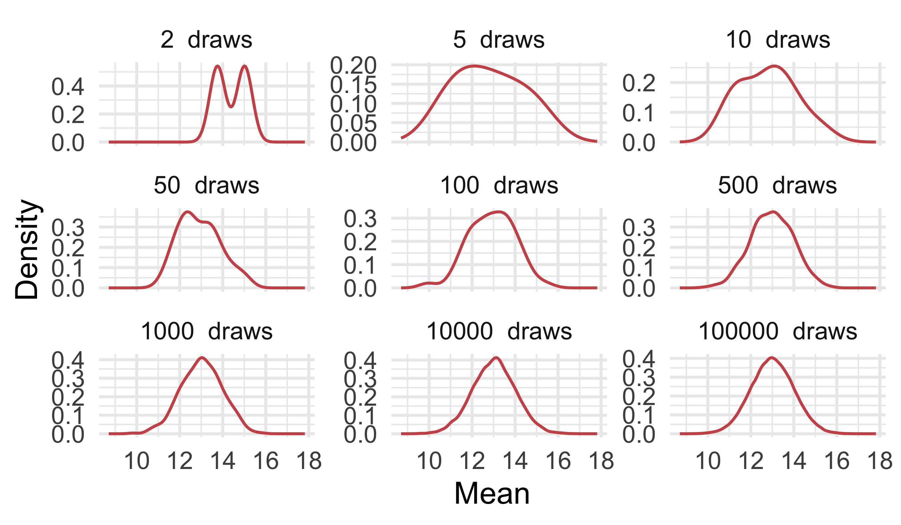
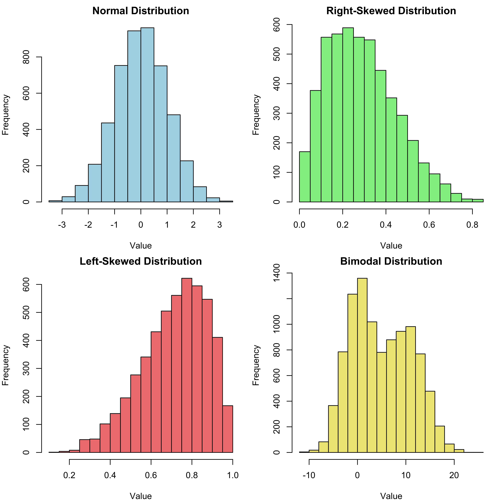
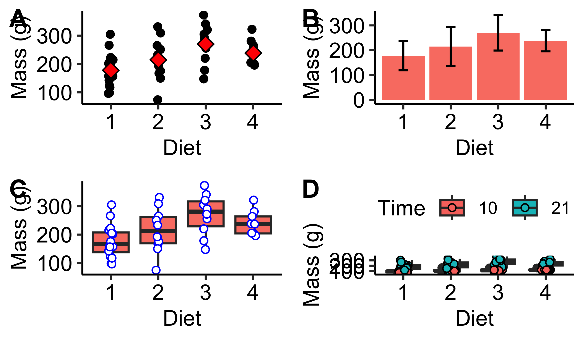

2. Data Summaries & Descriptions
The First Steps of Exploratory Data Analysis
Smit, A. J. ![]()

“In God we trust; all others must bring data.”
— W. Edwards Deming (attributed)
NoteIn This Chapter
- Data summaries
- Measures of central tendency
- Measures of dispersal
- Descriptive statistics by group
ImportantTasks to Complete in This Chapter
- Task E

1 Introduction
Exploratory data analysis (EDA) is an essential initial step in every statistical analysis project aimed at understanding the structure, patterns, and characteristics of the data. During EDA, we visually, quantitatively examine the data by creating plots and summary statistics, and descriptive measures to identify trends, outliers, and potential relationships among variables. This process helps us formulate hypotheses, choose appropriate statistical models, and identify potential issues, anomalies that may require further investigation or data cleaning. EDA serves as a foundation for making informed decisions and guiding the subsequent steps of a statistical analysis project.
In this Chapter we will focus on the basic components of EDA, and these initial forays are built around measures of the central tendency (the mean, median, mode), the dispersion and variability (e.g. standard deviations and standard error, variance, quantiles) of the data. I advocate a workflow in which EDA, graphical assessments (Chapter 3) precede inferential statistics (Chapter 7).
But first, I want to define a few principles that you will encounter throughout this course on biostatistics.
NoteVariables and Parameters
In a statistical framework, a parameter is a fixed, unknown (to be determined) value that characterises a population, distribution and is often estimated using sample data. On the other hand, a variable is a measurable characteristic that can vary among individuals, objects in a population or sample. Parameters are used to describe the distribution of a population or while variables are the data points that are collected and analysed to draw conclusions about the population. Variables are used to estimate parameters through statistical methods such as regression and hypothesis testing.
NoteSamples and Populations
In statistics, samples, populations are two fundamental concepts used to describe data sets and the process of drawing conclusions from them.
Population A population is the entire set of individuals, objects, or events of interest in a study. It represents the complete collection of data points that you would ideally like to examine to answer a specific research question. Populations can be finite, infinite or depending on the context. For example, the population could be all the trees in a forest, all the people living in a country, or all the bacteria in a particular environment.
Sample A sample is a smaller random subset of the population, selected to represent the larger group. Due to practical constraints, such as time, cost, and accessibility, it is often impossible, impractical to collect data from every member of a population. Instead or we collect data from a carefully chosen sample, with the goal of making inferences about the broader population based on the information gathered from this smaller group. Ideally, a sample should be representative of the population, meaning that it accurately reflects the characteristics, variability present in the entire group. When drawing more samples from the population and the more representative it will be, the smaller the variance will be, and the better the accuracy of the estimated mean (Figure 1).
NoteWhen Is Something Random?
This is a bit of a rant. I often get annoyed by the imprecise use of language and disrespect for scientific terms. ‘Random’ is such a word (as are ‘literally’ and ‘energy’). The scientific concept of randomness and the colloquial usage of the word differ in their precision and context. Understanding these distinctions can help clarify the role of randomness in various settings.
Scientific concept of randomness In the scientific context, randomness refers to a specific pattern or sequence of events that completely lacks predictability, order, or regularity. The biostatistician often associates the term ‘random’ with probability theory, statistical models. In experiments, we use random sampling techniques to ensure that samples are representative of the population, and we employ random assignment to minimise biases in experimental groups. In computer science, algorithms generate pseudo-random numbers, which approximate true randomness but are ultimately determined by deterministic processes.
Colloquial usage of randomness In everyday language, the term ‘random’ is often used more loosely to describe events, situations that appear unexpected or surprising, or unrelated to a specific context. Colloquially, randomness may imply a lack of explanation or discernible pattern, even though in most cases the event might not be genuinely random in a strict scientific sense. For example, when someone says, “I had a random encounter with an old friend,” they mean the meeting was unexpected or unplanned, rather than being the result of a stochastic process. In these instances, there most certainly is an explanation for why the two friends haphazardly met.
An example of a truly random physical process is radioactive decay. Radioactive decay is a spontaneous process in which an unstable atomic nucleus loses energy by emitting radiation, such as alpha particles, beta particles, or gamma rays. The exact timing of when a specific atom will decay is unpredictable and follows a random pattern. The decay events are independent of each other and are governed by the principles of quantum mechanics, making radioactive decay a truly random physical process.
Sometimes we will see the term stochastic in the scientific literature. This term is similar to random stricto sensu, but it is used in a different context. The term ‘random’ refers to a lack of predictability, discernible pattern in a sequence of events, often associated with outcomes that are equally likely or follow a specific probability distribution. ‘Stochastic’, on the other hand, describes processes that incorporate an element of randomness and uncertainty, with outcomes that depend on both deterministic factors and random variables. Both terms are used in the context of probability theory and statistical models to describe events or processes that exhibit some level of unpredictability. Stochastic processes are widespread in nature and may explain a large fraction of ecological variation.
An example of a stochastic ecological process is the population dynamics of a species subject to unpredictable environmental fluctuations. In this scenario, the growth and decline of a species’ population is influenced by both deterministic factors such as birth and death rates, and random factors, like unpredictable weather events, disease outbreaks, or variations in food availability. These random factors introduce uncertainty and variability in the population dynamics, making it a stochastic ecological process.
Okay, you may ask, “Weather models can predict tomorrow’s weather to some degree, albeit not with complete accuracy, so is there truly such a thing as unpredictable weather events”? Weather events might not be truly random in the strictest sense, as weather patterns are influenced by various physical factors, such as temperature, air pressure, humidity, and interactions between different atmospheric layers. However, due to the immense complexity and chaotic nature of these factors, weather events can be challenging to predict with absolute certainty, especially over longer time scales.
In this context, “unpredictable weather events” are considered random from a practical standpoint because they introduce uncertainty and variability in the system. While they may not be truly random like quantum-level events, their unpredictability and the difficulty in forecasting their occurrence make them effectively random for many ecological and statistical analyses.
2 The Palmer Penguin Dataset
The Palmer penguin dataset in the palmerpenguins package is a modern alternative to the classic Iris dataset, often used for teaching data exploration, visualisation, and statistical modelling. The dataset was introduced by Dr. Kristen Gorman, the Palmer Station Long Term Ecological Research (LTER) program. It contains information collected from penguins living in the Palmer Archipelago and located in the Western Antarctic Peninsula, and focuses on three different penguin species: Adélie, Chinstrap, and Gentoo.
The dataset includes measurements such as bill length (bill_length_mm), bill depth (bill_depth_mm), flipper length (flipper_length_mm), body mass (body_mass_g), and sex (sex), along with the species of the penguins. It provides an opportunity to explore various aspects of data analysis, such as EDA, data visualisation, data preprocessing, hypothesis testing, and machine learning techniques like classification, clustering.
Let us start with loading the data:
3 Exploring the Properties of the Data Structure
Several functions help us get a broad view of the data structure (the dataset) itself: its size (number of rows and columns), the data classes contained, the presence of missing values, and so forth. This table lists some of the most important ways to get such an overview:
Purpose | Function |
|: — — — — — — — — –|: — — — — –| | The class of the dataset | class() | | The head of the dataframe | head() | | The tail of the dataframe | tail() | | Printing the data | print() | | Glimpse the data | glimpse() | | Show number of rows | nrow() | | Show number of columns | ncol() | | The column names | colnames() | | The row names | row.names() | | The dimensions | dim() | | The dimension names | dimnames() | | The data structure | str() |
First, it is a good idea to understand the class of the data structure. We can do this with the class() function. Applying it to the penguins dataset, we see that the dataset is a tibble, which is a modern take on the old-fashioned dataframe:
We can convert between tibbles and dataframes using the commands as.data.frame() and as_tibble():
And vice versa:
Note that the print() methods for tibbles and dataframes differ somewhat. You will see that the print() function applied to a dataframe does not result in a particularly nice-looking table. Applied to a tibble, on the other hand, print() results in a neat, concise display of the dataset’s content:
R> species island bill_length_mm bill_depth_mm flipper_length_mm body_mass_g
R> 1 Adelie Torgersen 39.1 18.7 181 3750
R> 2 Adelie Torgersen 39.5 17.4 186 3800
R> 3 Adelie Torgersen 40.3 18.0 195 3250
R> 4 Adelie Torgersen NA NA NA NA
R> 5 Adelie Torgersen 36.7 19.3 193 3450
R> sex year
R> 1 male 2007
R> 2 female 2007
R> 3 female 2007
R> 4 <NA> 2007
R> 5 female 2007R> # A tibble: 344 × 8
R> species island bill_length_mm bill_depth_mm flipper_length_mm body_mass_g
R> <fct> <fct> <dbl> <dbl> <int> <int>
R> 1 Adelie Torgersen 39.1 18.7 181 3750
R> 2 Adelie Torgersen 39.5 17.4 186 3800
R> 3 Adelie Torgersen 40.3 18 195 3250
R> 4 Adelie Torgersen NA NA NA NA
R> 5 Adelie Torgersen 36.7 19.3 193 3450
R> 6 Adelie Torgersen 39.3 20.6 190 3650
R> 7 Adelie Torgersen 38.9 17.8 181 3625
R> 8 Adelie Torgersen 39.2 19.6 195 4675
R> 9 Adelie Torgersen 34.1 18.1 193 3475
R> 10 Adelie Torgersen 42 20.2 190 4250
R> # ℹ 334 more rows
R> # ℹ 2 more variables: sex <fct>, year <int>The glimpse() function is not dissimilar to print() as it gives more-or-less the same kind of output, but with a horizontal orientation:
R> Rows: 344
R> Columns: 8
R> $ species <fct> Adelie, Adelie, Adelie, Adelie, Adelie, Adelie, Adel…
R> $ island <fct> Torgersen, Torgersen, Torgersen, Torgersen, Torgerse…
R> $ bill_length_mm <dbl> 39.1, 39.5, 40.3, NA, 36.7, 39.3, 38.9, 39.2, 34.1, …
R> $ bill_depth_mm <dbl> 18.7, 17.4, 18.0, NA, 19.3, 20.6, 17.8, 19.6, 18.1, …
R> $ flipper_length_mm <int> 181, 186, 195, NA, 193, 190, 181, 195, 193, 190, 186…
R> $ body_mass_g <int> 3750, 3800, 3250, NA, 3450, 3650, 3625, 4675, 3475, …
R> $ sex <fct> male, female, female, NA, female, male, female, male…
R> $ year <int> 2007, 2007, 2007, 2007, 2007, 2007, 2007, 2007, 2007…I suggest converting all your dataframes to tibbles to benefit from the Tidyverse philosophy around which tibbles were designed.
The tops and bottoms of tibbles (or dataframes) can be viewed with the head() and tail() functions. Both take the n = ... argument so that you can specify how many rows to display:
R> # A tibble: 6 × 8
R> species island bill_length_mm bill_depth_mm flipper_length_mm body_mass_g
R> <fct> <fct> <dbl> <dbl> <int> <int>
R> 1 Adelie Torgersen 39.1 18.7 181 3750
R> 2 Adelie Torgersen 39.5 17.4 186 3800
R> 3 Adelie Torgersen 40.3 18 195 3250
R> 4 Adelie Torgersen NA NA NA NA
R> 5 Adelie Torgersen 36.7 19.3 193 3450
R> 6 Adelie Torgersen 39.3 20.6 190 3650
R> # ℹ 2 more variables: sex <fct>, year <int>R> # A tibble: 3 × 8
R> species island bill_length_mm bill_depth_mm flipper_length_mm body_mass_g
R> <fct> <fct> <dbl> <dbl> <int> <int>
R> 1 Chinstrap Dream 49.6 18.2 193 3775
R> 2 Chinstrap Dream 50.8 19 210 4100
R> 3 Chinstrap Dream 50.2 18.7 198 3775
R> # ℹ 2 more variables: sex <fct>, year <int>You can wrap head() and tail() in print() for a nicer display:
R> # A tibble: 6 × 8
R> species island bill_length_mm bill_depth_mm flipper_length_mm body_mass_g
R> <fct> <fct> <dbl> <dbl> <int> <int>
R> 1 Adelie Torgersen 39.1 18.7 181 3750
R> 2 Adelie Torgersen 39.5 17.4 186 3800
R> 3 Adelie Torgersen 40.3 18 195 3250
R> 4 Adelie Torgersen NA NA NA NA
R> 5 Adelie Torgersen 36.7 19.3 193 3450
R> 6 Adelie Torgersen 39.3 20.6 190 3650
R> # ℹ 2 more variables: sex <fct>, year <int>R> # A tibble: 3 × 8
R> species island bill_length_mm bill_depth_mm flipper_length_mm body_mass_g
R> <fct> <fct> <dbl> <dbl> <int> <int>
R> 1 Chinstrap Dream 49.6 18.2 193 3775
R> 2 Chinstrap Dream 50.8 19 210 4100
R> 3 Chinstrap Dream 50.2 18.7 198 3775
R> # ℹ 2 more variables: sex <fct>, year <int>Three functions tell us about the size of the tibble. We can return the number of rows with nrow(), the number of columns with ncol(), or both the number of rows and columns with dim():
If we wanted to return the names of the columns we could use colnames() as such:
R> [1] "species" "island" "bill_length_mm"
R> [4] "bill_depth_mm" "flipper_length_mm" "body_mass_g"
R> [7] "sex" "year"Tibbles do not have row names, but dataframes can have (although they are not frequently used). If we did have row names and wanted to know their names, we could use row.names() (note the . in the function name). We can also use colnames() (names() returns an identical output)row.names() to assign new names to the dataframes or tibbles — see the respective help files for more information about this use. There is also the dimnames() function.
ImportantDo It Now!
Explain the output of dimnames() when applied to the penguins dataset.
The last function to introduce in this section is str(). It can be applied to any R object (i.e. any data structure or model output).
R> tibble [344 × 8] (S3: tbl_df/tbl/data.frame)
R> $ species : Factor w/ 3 levels "Adelie","Chinstrap",..: 1 1 1 1 1 1 1 1 1 1 ...
R> $ island : Factor w/ 3 levels "Biscoe","Dream",..: 3 3 3 3 3 3 3 3 3 3 ...
R> $ bill_length_mm : num [1:344] 39.1 39.5 40.3 NA 36.7 39.3 38.9 39.2 34.1 42 ...
R> $ bill_depth_mm : num [1:344] 18.7 17.4 18 NA 19.3 20.6 17.8 19.6 18.1 20.2 ...
R> $ flipper_length_mm: int [1:344] 181 186 195 NA 193 190 181 195 193 190 ...
R> $ body_mass_g : int [1:344] 3750 3800 3250 NA 3450 3650 3625 4675 3475 4250 ...
R> $ sex : Factor w/ 2 levels "female","male": 2 1 1 NA 1 2 1 2 NA NA ...
R> $ year : int [1:344] 2007 2007 2007 2007 2007 2007 2007 2007 2007 2007 ...
ImportantDo It Now!
Explain the output of str() when applied to the penguins dataset.
4 Exploring the Properties of the Data
Thus far we have looked at the properties of the data structure. Now we turn to the properties of the data contained within a data structure. This might simply be to see the data class of the different variables, or to provide some basic descriptive statistics. Before we go to deeply into the data summaries, we need to first review basic descriptive statistics.
Descriptive statistics refer to the process of summarising and organising data collected from our various kinds of studies in a meaningful way. The process of summary implies that we take something detailed (like a large number of individual measurements) and reduce its complexity to a view — a ‘statistic’ — that tells us something informative about the nature of the population. Descriptive statistics allow us to gain an initial understanding of the data’s main features, including the sample size, central tendency, variability, and distribution. We will look at data distributions in Chapter 4.
The sample size is simply the number of data points (\(n\)) per sample. The measures of central tendency include the mean, median, and mode, while variability is most often described using the range, interquartile range, variance, and standard deviation. Additionally, descriptive statistics can involve visual representations, such as histograms, box plots, and scatter plots, to further illustrate the data’s characteristics, and we will cover these in Chapter 3. Descriptive statistics serve as a foundation for more advanced statistical analyses, as it helps us make sense of our data, identify patterns and trends, or potential anomalies.
4.1 Measures of Central Tendency
Statistic | Function | Package |
|: — — — -|: — — — — -|: — — — -| | Mean | mean() | base | | Median | median() | base | | Mode | Do it! | | | Skewness | skewness() | e1071 | | Kurtosis | kurtosis() | e1071 |
Central tendency is a fundamental concept in statistics, referring to the central, typical value of a dataset that best represents its overall distribution. The measures of central tendency are also sometimes called ‘location’ statistics. As a key component of descriptive statistics or central tendency is essential for summarising and simplifying complex data. It provides a single representative value that captures the data’s general behaviour and which might tell us something about the bigger population from which the random samples were drawn.
A thorough assessment of the central tendency in EDA serves several purposes:
Summary of data Measures of central tendency, such as the mean, median, and mode, provide a single value that represents the centre, typical value of a dataset. They help summarise the data and allow us to gain an early insight into the dataset’s general properties and behaviour.
Comparing groups or distributions Central tendency measures allow us to compare different datasets or groups within a dataset. They can help identify differences or similarities in the data. This may be useful for hypothesis testing and inferential statistics.
Data transformation decisions Understanding the central tendency of our data can inform decisions on whether to apply transformations to the data to better meet the assumptions of certain statistical tests or improve the interpretability of the results.
Identifying potential issues Examining the central tendency can help reveal issues with the data, such as outliers, data entry errors or that could influence the results of inferential statistics. Outliers, for example, can greatly impact the mean, making the median a more robust measure of central tendency in such cases.
Understanding the central tendency informs the choice of inferential statistics in the following ways:
Assumptions of statistical tests Many inferential statistical tests have assumptions about the distribution of the data, such as normality, linearity, or homoscedasticity. Analysing the central tendency helps assess whether these assumptions are met, informs the choice of an appropriate test.
Choice of statistical models The central tendency can influence the choice of statistical models or the selection of dependent and independent variables in regression analyses — certain models or relationships may be more appropriate depending on the data’s distribution and central tendencies.
Choice of estimators Central tendency measures can influence our choice of estimators for further inferential statistics, depending on the data’s distribution, presence of outliers (e.g. and mean vs. median).
Before I discuss each central tendency statistic, I will generate some random data to represent normal, skewed distributions. I will use these data in my discussions and below.
# Generate random data from a normal distribution
set.seed(666)
n <- 5000 # Number of data points
mean <- 0
sd <- 1
normal_data <- rnorm(n, mean, sd)
# Generate random data from a slightly
# right-skewed beta distribution
alpha <- 2
beta <- 5
right_skewed_data <- rbeta(n, alpha, beta)
# Generate random data from a slightly
# left-skewed beta distribution
alpha <- 5
beta <- 2
left_skewed_data <- rbeta(n, alpha, beta)
# Generate random data with a bimodal distribution
mean1 <- 0
mean2 <- 10
sd1 <- 3
sd2 <- 4
# Generate data from two normal distributions
data1 <- rnorm(n, mean1, sd1)
data2 <- rnorm(n, mean2, sd2)
# Combine the data from both distributions to
# create a bimodal distribution
bimodal_data <- c(data1, data2)# Set up a three-panel plot layout
old_par <- par(mfrow = c(2, 2), mar = c(4, 4, 2, 1))
# Plot the histogram of the normal distribution
hist(normal_data, main = "Normal Distribution",
xlab = "Value", ylab = "Frequency",
col = "lightblue", border = "black")
# Plot the histogram of the right-skewed distribution
hist(right_skewed_data, main = "Right-Skewed Distribution",
xlab = "Value", ylab = "Frequency",
col = "lightgreen", border = "black")
# Plot the histogram of the left-skewed distribution
hist(left_skewed_data, main = "Left-Skewed Distribution",
xlab = "Value", ylab = "Frequency",
col = "lightcoral", border = "black")
# Plot the histogram of the left-skewed distribution
hist(bimodal_data, main = "Bimodal Distribution",
xlab = "Value", ylab = "Frequency",
col = "khaki2", border = "black")
# Reset the plot layout to default
par(old_par)

4.1.1 The sample mean
The mean is the arithmetic average of the data, and it is calculated by summing all the data, dividing it by the sample size and n (Equation 1).
The mean, \(\bar{x}\), is calculated thus: \[\bar{x} = \frac{1}{n}\sum_{i=1}^{n}x_{i} = \frac{x_{1} + x_{2} + \cdots + x_{n}}{n} \tag{1}\] where \(x_{1} + x_{2} + \cdots + x_{n}\) are the observations\(n\) is the number of observations in the sample.
We can calculate the mean of a sample using the … wait for it … mean() function:
ImportantDo It Now!
How would you manually calculate the mean value for the normal_data?
The mean is quite sensitive to the presence of outliers or extreme values in the data, and it is advised that its use be reserved for normally distributed data from which the extremes/outliers have been removed. When extreme values are indeed part of our data, not simply ‘noise’, then we have to resort to a different measure of central tendency: the median.
4.1.2 The median
The median indicates the centre value in our dataset. The simplest way to explain what it is is to describe how it is determined. It can be calculated by ‘hand’ (if you have a small enough amount of data) by arranging all the numbers in sequence from low to high, and then finding the middle value. If there are five numbers, say 5, 2, 6, 13, 1, then you would arrange them from low to high, i.e. 1, 2, 5, 6, 13. The middle number is 5. This is the median. But there is no middle if we have an even number of values. What now? Take this example sequence of six integers (they may also be floating point numbers), which has already been ordered for your pleasure: 1, 2, 5, 6, 9, 13. Find the middle two numbers (i.e. 5, 6) and take the mean. It is 5.5. That is the median.
The median is therefore the value that separates the lower half of the sample data from the upper half. In normally distributed continuous data the median is equal to the mean. Comparable concepts to the median are the 1st and 3rd quartiles, which, respectively, separate the first quarter of the data from the last quarter — see the later in the section on ‘Measures of variance, dispersal’ in this Chapter. The advantage of the median over the mean is that it is unaffected by extreme values or outliers. The median is also used to provide a robust description of non-parametric data (see Chapter 4 for a discussion on normal data and other data distributions).
What is the median of the normal_data dataset? We use the median() function for this:
It is easier to see what the median is by looking at a much smaller dataset. Let us take 11 random data points:
R> [1] 8.9 9.1 9.2 10.3 10.7 11.8 11.9 12.8 13.8 14.5 19.7R> [1] 11.8The mean and median together provide a comprehensive understanding of the data’s central tendency and underlying distribution.
NoteWhat Is the Relationship Between the Median and Quantiles?
The relation between the median and quantiles lies in their roles as measures that describe the relative position of data points within a dataset. Quantiles are values that partition a dataset into equal intervals, with each interval containing the same proportion of the data. The most common types of quantiles are quartiles, quintiles, deciles, and percentiles.
The median is a special case of a quantile, specifically the 50th percentile, the second quartile (Q2). It divides the dataset into two equal halves or with 50% of the data points falling below the median and 50% of the data points falling above the median. In this sense, the median is a central quantile that represents the middle value of the dataset.
Both the median and quantiles help describe the distribution and spread of a dataset, with the median providing information about the centre, other quantiles (such as quartiles) offering insights into the overall shape and skewness, and dispersion of the data.
4.1.3 The mode
The mode is a measure that represents the value or values that occur most frequently in a dataset. Unlike the mean and median, the mode can be used with both numerical, categorical data and making it quite versatile. For a dataset with a single value that appears most often, the distribution is considered unimodal. However, datasets can also be bimodal (having two modes), multimodal (having multiple modes) when there are multiple values that occur with the same highest frequency.
While the mode may not always be a good representative of the dataset’s centre, especially in the presence of extreme values, skewed distributions or it can still offer valuable information about the data’s characteristics when used alongside the other measures of central tendency.
There is no built-in function to calculate the mode of a numeric vector, but you can make one if you need it. There are some examples on the internet that you will be able to adapt to your needs, but my cursory evaluation of them does not suggest they are particularly useful. The easiest way to see the data’s mode(s) is to examine a histogram of your data. All the data we have explored above are examples of unimodal distributions, but a bimodal distribution can also be seen in Figure 2.
4.1.4 Skewness
Skewness is a measure of symmetry (or asymmetry) of the data distribution, and it is best understood by understanding the location of the median relative to the mean. A distribution with a skewness of zero is considered symmetric, with both tails extending equally on either side of the mean. Here, the mean will be the same as the median. A negative skewness indicates that the mean of the data is less than their median — the data distribution is left-skewed; that is, there is a longer, heavier tail to the left of the mean. A positive skewness results from data that have a mean that is larger than their median; these data have a right-skewed distribution; so there will be a longer or heavier tail to the right of the mean. Base R does not have a built-in skewness function but we can use the one included with the e1071 package:
R> [1] 0.5453162R> [1] TRUER> [1] -0.5790834R> [1] TRUE4.1.5 Kurtosis
Kurtosis describes the tail shape of the data’s distribution. Kurtosis is effectively a measure of the ‘tailedness’ or the concentration of data in the tails of a distribution, relative to a normal distribution. A normal distribution has zero kurtosis (or close to), thus the standard tail shape (mesokurtic). Negative kurtosis indicates data with a thin-tailed (platykurtic) distribution. Positive kurtosis indicates a fat-tailed distribution (leptokurtic).
Similarly as to skewness, we use the e1071 package for a kurtosis function. All the output shown below suggests a tendency towards thin-tailedness, but it is subtle.
R> [1] -0.01646261R> [1] -0.1898941R> [1] -0.1805365I have seldom used the concepts of the skewness or kurtosis in any EDA, but it is worth being aware of them. The overall purpose of examining data using the range of central tendency statistics is to get an idea of whether our data are normally distributed — a normal distribution is a key requirement for all parametric inferential statistics. See Chapter 4 for a discourse of data distributions. These central tendency statistics will serve you well as a first glance, but formal tests for normality do exist, I encourage their use before embarking on the rest of the journey. We will explore these formal tests in Chapter 7.
4.2 Measures of Variance or Dispersion Around the Centre
Statistic | Function |
|: — — — — — — — |: — — — — -| | Variance | var() | | Standard deviation | sd() | | Minimum | min() | | Maximum | max() | | Range | range() | | Quantile | quantile() | | Inter Quartile Range | IQR() |
A good understanding of variability, or variation around the central point, is crucial in EDA for several reasons:
Signal vs. noise Variability helps distinguish between the signal (true underlying pattern) and noise (random fluctuations that might arise from stochastic processes, measurement, experimental error or other unaccounted for influences) in the data. High variability can make it difficult to detect meaningful patterns or relationships in the data, while low variability may indicate a strong underlying pattern.
Precision and reliability Variability is related to the precision and reliability of measurements. Smaller variability indicates more consistent and precise measurements, whereas larger variability suggests inconsistency, potential issues with the data collection process.
Comparing groups Understanding variability is essential when comparing different groups or datasets. Even if two groups have similar central tendencies, their variability may differ significantly, leading to different interpretations of the data.
Assumptions of statistical tests Many inferential statistical tests have assumptions about the variability of the data, such as homoscedasticity (equal variances across groups), independence of observations. Assessing variability helps determine whether these assumptions are met and informs the choice of appropriate tests.
Effect sizes and statistical power Variability plays a role in determining the effect size (magnitude of the difference between groups or strength of relationships) and the statistical power (ability to detect a true effect) of a study. High variability can make it harder to detect significant effects, requiring larger sample sizes to achieve adequate statistical power.
Understanding variability informs the choice of inferential statistics:
Parametric vs non-parametric tests If the data exhibit normality and homoscedasticity, parametric tests may be appropriate (see Chapter 7). However, if the data have high variability, violates the assumptions of parametric tests or non-parametric alternatives may be more suitable.
Choice of estimators Variability can influence the choice of estimators (e.g., mean vs. median) for central tendency, depending on the data’s distribution, presence of outliers.
Sample size calculations Variability informs sample size calculations for inferential statistics. Higher variability typically requires larger sample sizes to achieve sufficient statistical power.
Model selection Variability can influence the choice of statistical models, as certain models may better accommodate the variability in the data than others (e.g., linear vs. non-linear models, fixed vs. random effects).
Let us now look at the estimators of variance.
4.2.1 Variance and standard deviation
Variance and standard deviation (SD) are examples of interval estimates. The sample variance, \(S^{2}\), may be calculated according to the following formula (Equation 2). If we cannot be bothered to calculate the variance and SD by hand, we may use the built-in functions var() and sd():
The sample variance: \[S^{2} = \frac{1}{n-1}\sum_{i=1}^{n}(x_{i}-\bar{x})^{2} \tag{2}\]
This reads, “the sum of the squared differences from the mean, divided by the sample size minus 1.” To get the standard deviation, \(S\), we take the square root of the variance, i.e. \(S = \sqrt{S^{2}}\).
ImportantDo It Now!
Manually calculate the variance and SD for the normal_data. Make sure your answer is the same as those reported above.
The interpretation of the concepts of mean and median are fairly straight forward and intuitive. Not so for the measures of variance. What does \(S\) represent? Firstly, the unit of measurement of \(S\) is the same as that of \(\bar{x}\) (but the variance does not share this characteristic). If temperature is measured in °C, then \(S\) also takes a unit of °C. Since \(S\) measures the dispersion around the mean, we write it as \(\bar{x} \pm S\) (note that often the mean and standard deviation are written with the letters mu and sigma, respectively; i.e. \(\mu \pm \sigma\)). The smaller \(S\) the closer the sample data are to \(\bar{x}\), and the larger the value is the further away they will spread out from \(\bar{x}\). So, it tells us about the proportion of observations above, below\(\bar{x}\). But what proportion? We invoke the 68-95-99.7 rule: ~68% of the population (as represented by a random sample of \(n\) observations taken from the population) falls within 1\(S\) of \(\bar{x}\) (i.e. ~34% below \(\bar{x}\) and ~34% above \(\bar{x}\)); ~95% of the population falls within 2\(S\); and ~99.7% falls within 3\(S\) (Figure 3).

Like the mean, \(S\) is affected by extreme values and outliers, so before we attach \(S\) as a summary statistic to describe some data, we need to ensure that the data are in fact normally distributed. We will talk about how to do this in Chapter 7, where we will go over the numerous ways to check the assumption of normality. When the data are found to be non-normal, we need to find appropriate ways to express the spread of the data. Enter the quartiles.
4.2.2 The minimum, maximum, and range
A description of the extremes (edges of the distribution) of the data can also be provided by the functions min(), max() and range(). These concepts are straight forward and do not require elaboration. They apply to data of any distribution, and not only to normal data. These statistics are often the first places you want to start when looking at the data for the first time. Note that range() does something different from min() and max():
R> [1] -3.400137R> [1] 3.235566R> [1] -3.400137 3.235566range() actually gives us the minimum and maximum values, and not the difference between them. To find the range value properly we must be a bit more clever:
4.2.3 Quartiles and the interquartile range
A more forgiving approach (forgiving of the extremes, often called ‘robust’) is to divide the distribution of ordered data into quarters, finding the points below which 25% (0.25 and the first quartile; Q1), 50% (0.50, the median; Q2), 75% (0.75 and the third quartile; Q3) of the data are distributed. These are called quartiles (for ‘quarter;’ not to be confused with quantile, which is a more general concept that divides the distribution into any arbitrary proportion from 0 to 1).
The interquartile range (IQR) is a measure of statistical dispersion that provides information about the spread of the middle 50% of a dataset. It is calculated by subtracting the first quartile (25th percentile) from the third quartile (75th percentile).
The quartiles and IQR have several important uses:
Identifying central tendency As I have shown earlier, the second quartile, or median, is a measure of central tendency that is less sensitive to outliers than the mean. It offers a more robust estimate of the typical value in skewed distributions, those with extreme values.
Measure of variability The IQR is a robust measure of variability that is less sensitive to outliers and extreme values compared to other measures like the range or standard deviation. It gives a better understanding of the data spread in the middle part of the distribution.
Identifying outliers The IQR can be used to identify potential outliers in the data. A common method is to define outliers as data points falling below the first quartile minus 1.5 times the IQR or above the third quartile plus 1.5 times the IQR.
Describing skewed data For skewed distributions, the quartiles, IQR provide a better description of the data spread than the standard deviation and as it is not influenced by the skewness of the data. It can help reveal the degree of asymmetry in the distribution and the concentration of values in the middle portion.
Comparing distributions The IQR can be used to compare the variability or spread of two or more distributions. It provides a more robust comparison than the standard deviation or range when the distributions have outliers or are not symmetric, and the median reveals departures from normality.
Box plots The quartiles and IQR are key components of box plots, which are graphical representations of the distribution of a dataset. Box plots display the median, first quartile, third quartile, and potential outliers, providing a visual representation of the data’s central tendency, spread, and potential outliers.
In R we use the quantile() function to provide the quartiles. Here is a demonstration:
R> 25%
R> -0.6597937R> 75%
R> 0.6840946R> 25%
R> 0.6133139R> 75%
R> 0.8390202We calculate the interquartile range using the IQR() function:
5 Data Summaries
Purpose | Function | Package |
|: — — — — — — — — — — -|: — — — — — — |: — — — — — — –| | Summary of the data properties | summary() | base | | | describe() | psych | | | skim() | skimr | | | descriptives() | jmv | | | dfSummary() | summarytools |
R has a built-in function that provides a broad overview, not only of the classes within a dataframe, but also of some coarsely calculated descriptive statistics that might serve well as a starting place for EDA. There also also several packages that offer similar views of our data. I will introduce these below, but leave it to you to study, to choose one you like best.
Above, I said, “coarsely calculated”. Why? Because it ignores the grouping structure of the data.
5.1 summary()
The first method is a generic function that can be applied to a range of R data structures, and whose output depends on the class of the structure. It is called summary(). This function can be applied to the dataset itself (here a tibble) and also to the output of some models fitted to the data (later we will see, for instance, how it is applied to t-tests, ANOVAs, correlations, and regressions). When applied to a dataframe, tibble or we will be presented with something quite useful. Let us return to the Palmer penguin dataset, and you will see many familiar descriptive statistics:
R> species island bill_length_mm bill_depth_mm
R> Adelie :152 Biscoe :168 Min. :32.10 Min. :13.10
R> Chinstrap: 68 Dream :124 1st Qu.:39.23 1st Qu.:15.60
R> Gentoo :124 Torgersen: 52 Median :44.45 Median :17.30
R> Mean :43.92 Mean :17.15
R> 3rd Qu.:48.50 3rd Qu.:18.70
R> Max. :59.60 Max. :21.50
R> NA's :2 NA's :2
R> flipper_length_mm body_mass_g sex year
R> Min. :172.0 Min. :2700 female:165 Min. :2007
R> 1st Qu.:190.0 1st Qu.:3550 male :168 1st Qu.:2007
R> Median :197.0 Median :4050 NA's : 11 Median :2008
R> Mean :200.9 Mean :4202 Mean :2008
R> 3rd Qu.:213.0 3rd Qu.:4750 3rd Qu.:2009
R> Max. :231.0 Max. :6300 Max. :2009
R> NA's :2 NA's :25.2 psych::describe()
The psych package has the describe() function, which provides a somewhat more verbose output containing many of the descriptive statistics I introduced earlier in this Chapter:
R> vars n mean sd median trimmed mad min max
R> species* 1 344 1.92 0.89 2.00 1.90 1.48 1.0 3.0
R> island* 2 344 1.66 0.73 2.00 1.58 1.48 1.0 3.0
R> bill_length_mm 3 342 43.92 5.46 44.45 43.91 7.04 32.1 59.6
R> bill_depth_mm 4 342 17.15 1.97 17.30 17.17 2.22 13.1 21.5
R> flipper_length_mm 5 342 200.92 14.06 197.00 200.34 16.31 172.0 231.0
R> body_mass_g 6 342 4201.75 801.95 4050.00 4154.01 889.56 2700.0 6300.0
R> sex* 7 333 1.50 0.50 2.00 1.51 0.00 1.0 2.0
R> year 8 344 2008.03 0.82 2008.00 2008.04 1.48 2007.0 2009.0
R> range skew kurtosis se
R> species* 2.0 0.16 -1.73 0.05
R> island* 2.0 0.61 -0.91 0.04
R> bill_length_mm 27.5 0.05 -0.89 0.30
R> bill_depth_mm 8.4 -0.14 -0.92 0.11
R> flipper_length_mm 59.0 0.34 -1.00 0.76
R> body_mass_g 3600.0 0.47 -0.74 43.36
R> sex* 1.0 -0.02 -2.01 0.03
R> year 2.0 -0.05 -1.51 0.045.3 skimr::skim()
The skimr package offers something similar, but different. The skim() function returns:
| Name | penguins |
| Number of rows | 344 |
| Number of columns | 8 |
| _______________________ | |
| Column type frequency: | |
| factor | 3 |
| numeric | 5 |
| ________________________ | |
| Group variables | None |
Variable type: factor
| skim_variable | n_missing | complete_rate | ordered | n_unique | top_counts |
|---|---|---|---|---|---|
| species | 0 | 1.00 | FALSE | 3 | Ade: 152, Gen: 124, Chi: 68 |
| island | 0 | 1.00 | FALSE | 3 | Bis: 168, Dre: 124, Tor: 52 |
| sex | 11 | 0.97 | FALSE | 2 | mal: 168, fem: 165 |
Variable type: numeric
| skim_variable | n_missing | complete_rate | mean | sd | p0 | p25 | p50 | p75 | p100 | hist |
|---|---|---|---|---|---|---|---|---|---|---|
| bill_length_mm | 2 | 0.99 | 43.92 | 5.46 | 32.1 | 39.23 | 44.45 | 48.5 | 59.6 | ▃▇▇▆▁ |
| bill_depth_mm | 2 | 0.99 | 17.15 | 1.97 | 13.1 | 15.60 | 17.30 | 18.7 | 21.5 | ▅▅▇▇▂ |
| flipper_length_mm | 2 | 0.99 | 200.92 | 14.06 | 172.0 | 190.00 | 197.00 | 213.0 | 231.0 | ▂▇▃▅▂ |
| body_mass_g | 2 | 0.99 | 4201.75 | 801.95 | 2700.0 | 3550.00 | 4050.00 | 4750.0 | 6300.0 | ▃▇▆▃▂ |
| year | 0 | 1.00 | 2008.03 | 0.82 | 2007.0 | 2007.00 | 2008.00 | 2009.0 | 2009.0 | ▇▁▇▁▇ |
5.4 jmv::descriptives()
Here is yet another view into our data, this time courtesy of the jmv package:
R>
R> DESCRIPTIVES
R>
R> Descriptives
R> ──────────────────────────────────────────────────────────────────────────────────────────────────────────────────────────────────────
R> species island bill_length_mm bill_depth_mm flipper_length_mm body_mass_g sex year
R> ──────────────────────────────────────────────────────────────────────────────────────────────────────────────────────────────────────
R> N 344 344 342 342 342 342 333 344
R> Missing 0 0 2 2 2 2 11 0
R> Mean 43.92193 17.15117 200.9152 4201.754 2008.029
R> Median 44.45000 17.30000 197.0000 4050.000 2008.000
R> Standard deviation 5.459584 1.974793 14.06171 801.9545 0.8183559
R> Minimum 32.10000 13.10000 172 2700 2007
R> Maximum 59.60000 21.50000 231 6300 2009
R> ──────────────────────────────────────────────────────────────────────────────────────────────────────────────────────────────────────
R>
R>
R> FREQUENCIES
R>
R> Frequencies of species
R> ─────────────────────────────────────────────────────
R> species Counts % of Total Cumulative %
R> ─────────────────────────────────────────────────────
R> Adelie 152 44.18605 44.18605
R> Chinstrap 68 19.76744 63.95349
R> Gentoo 124 36.04651 100.00000
R> ─────────────────────────────────────────────────────
R>
R>
R> Frequencies of island
R> ─────────────────────────────────────────────────────
R> island Counts % of Total Cumulative %
R> ─────────────────────────────────────────────────────
R> Biscoe 168 48.83721 48.83721
R> Dream 124 36.04651 84.88372
R> Torgersen 52 15.11628 100.00000
R> ─────────────────────────────────────────────────────
R>
R>
R> Frequencies of sex
R> ──────────────────────────────────────────────────
R> sex Counts % of Total Cumulative %
R> ──────────────────────────────────────────────────
R> female 165 49.54955 49.54955
R> male 168 50.45045 100.00000
R> ──────────────────────────────────────────────────5.5 summarytools::dfSummary()
And lastly, there is the summarytools package, thedfSummary() function within:
Data Frame Summary
penguins
Dimensions: 344 x 8Duplicates: 0
| Variable | Stats / Values | Freqs (% of Valid) | Graph | Missing | ||||||||||||||||||||||
|---|---|---|---|---|---|---|---|---|---|---|---|---|---|---|---|---|---|---|---|---|---|---|---|---|---|---|
| species [factor] |
|
|
![](data:image/png;base64,%20iVBORw0KGgoAAAANSUhEUgAAAD8AAAA9CAQAAACwnnlfAAAD+mlDQ1BpY2MAADiNjVVdaBxVFD6bubMrJM6D1Kamkg7+NZS0bFLRhNro/mWzbdwsk2y0QZDJ7N2daSYz4/ykaSk+FEEQwajgk+D/W8EnIWqr7YstorRQogSDKPjQ+keh0hcJ67kzs7uTuGu9y9z55pzvfufec+7eC5C4LFuW3iUCLBquLeXT4rPH5sTEOnTBfdANfdAtK46VKpUmARvjwr/a7e8gxt7X9rf3/2frrlBHAYjdhdisOMoi4mUA/hXFsl2ABEH7yAnXYvgJxDtsnCDiEsO1AFcYng/wss+ZkTKIX0UsKKqM/sTbiAfnI/ZaBAdz8NuOPDWorSkiy0XJNquaTiPTvYP7f7ZF3WvE24NPj7MwfRTfA7j2lypyluGHEJ9V5Nx0iK8uabPFEP9luWkJ8SMAXbu8hXIK8T7EY1V7vBzodKmqN9HAK6fUmWcQ34N4dcE8ysbuRPy1MV+cCnV+UpwM5g8eAODiKi2wevcjHrBNaSqIy41XaDbH8oj4uOYWZgJ97i1naTrX0DmlZopBLO6L4/IRVqc+xFepnpdC/V8ttxTGJT2GXpwMdMgwdfz1+nZXnZkI4pI5FwsajCUvVrXxQsh/V7UnpBBftnR/j+LcyE3bk8oBn7+fGuVQkx+T7Vw+xBWYjclAwYR57BUwYBNEkCAPaXxbYKOnChroaKHopWih+NXg7N/CKfn+ALdUav7I6+jRMEKm/yPw0KrC72hVI7wMfnloq3XQCWZwI9QxSS9JkoP4HCKT5DAZIaMgkifJU2SMZNE6Sg41x5Yic2TzudHUeQEjUp83i7yL6HdBxv5nZJjgtM/FSp83ENjP2M9rypXXbl46fW5Xi7tGVp+71nPpdCRnGmotdMja1J1yz//CX+fXsF/nN1oM/gd+A3/r21a3Nes0zFYKfbpvW8RH8z1OZD6lLVVsYbOjolk1VvoCH8sAfbl4uwhnBlv85PfJP5JryfeSHyZ/497kPuHOc59yn3HfgMhd4C5yX3JfcR9zn0dq1HnvNGvur6OxCuZpl1Hcn0Ja2C08KGSFPcLDwmRLT+gVhoQJYS96djerE40XXbsGx7BvZKt9rIAXqXPsbqyz1uE/VEaWBid8puPvMwNObuOEI0k/GSKFbbt6hO31pnZ+Sz3ar4HGc/FsPAVifF98ND4UP8Jwgxnfi75R7PHUcumyyw7ijGmdtLWa6orDyeTjYgqvMioWDOXAoCjruui7HNGmDrWXaOUAsHsyOMJvSf79F9t5pWVznwY4/Cc791q2OQ/grAPQ+2jLNoBn473vAKw+pnj2UngnxGLfAjjVg8PBV08az6sf6/VbeG4l3gDYfL1e//v9en3zA9TfALig/wP/JXgLtNfFGQAAACBjSFJNAAB6JgAAgIQAAPoAAACA6AAAdTAAAOpgAAA6mAAAF3CculE8AAAAAmJLR0QA/4ePzL8AAAAHdElNRQfqAggPEi8cBuN8AAAAkklEQVRYw+3Yyw2AIBBFUcbYoz1oPdoDVeoWTfyAMEMy9+3YcBIY4ouyB8sMprpzfkwXm8ogzHLDhzA1x+Np5fvu4eHh4eH98JcPbizbpTiSNgwp3iYnqdjT4a9ZZWupcFjFZavOlPh+ePDw8PDwiqHtGOZH2/mW507U+NfS2yz5fnjw8PDw8Irpqe3ox/fdG/MHuZARgDo+sesAAAA9dEVYdGljYzpjb3B5cmlnaHQAQ29weXJpZ2h0IDIwMDcgQXBwbGUgSW5jLiwgYWxsIHJpZ2h0cyByZXNlcnZlZC6eZtwpAAAAI3RFWHRpY2M6ZGVzY3JpcHRpb24AR2VuZXJpYyBSR0IgUHJvZmlsZRqnOI4AAAAASUVORK5CYII=) |
0 (0.0%) | ||||||||||||||||||||||
| island [factor] |
|
|
![](data:image/png;base64,%20iVBORw0KGgoAAAANSUhEUgAAAEQAAAA9CAQAAAC+NwcwAAAD+mlDQ1BpY2MAADiNjVVdaBxVFD6bubMrJM6D1Kamkg7+NZS0bFLRhNro/mWzbdwsk2y0QZDJ7N2daSYz4/ykaSk+FEEQwajgk+D/W8EnIWqr7YstorRQogSDKPjQ+keh0hcJ67kzs7uTuGu9y9z55pzvfufec+7eC5C4LFuW3iUCLBquLeXT4rPH5sTEOnTBfdANfdAtK46VKpUmARvjwr/a7e8gxt7X9rf3/2frrlBHAYjdhdisOMoi4mUA/hXFsl2ABEH7yAnXYvgJxDtsnCDiEsO1AFcYng/wss+ZkTKIX0UsKKqM/sTbiAfnI/ZaBAdz8NuOPDWorSkiy0XJNquaTiPTvYP7f7ZF3WvE24NPj7MwfRTfA7j2lypyluGHEJ9V5Nx0iK8uabPFEP9luWkJ8SMAXbu8hXIK8T7EY1V7vBzodKmqN9HAK6fUmWcQ34N4dcE8ysbuRPy1MV+cCnV+UpwM5g8eAODiKi2wevcjHrBNaSqIy41XaDbH8oj4uOYWZgJ97i1naTrX0DmlZopBLO6L4/IRVqc+xFepnpdC/V8ttxTGJT2GXpwMdMgwdfz1+nZXnZkI4pI5FwsajCUvVrXxQsh/V7UnpBBftnR/j+LcyE3bk8oBn7+fGuVQkx+T7Vw+xBWYjclAwYR57BUwYBNEkCAPaXxbYKOnChroaKHopWih+NXg7N/CKfn+ALdUav7I6+jRMEKm/yPw0KrC72hVI7wMfnloq3XQCWZwI9QxSS9JkoP4HCKT5DAZIaMgkifJU2SMZNE6Sg41x5Yic2TzudHUeQEjUp83i7yL6HdBxv5nZJjgtM/FSp83ENjP2M9rypXXbl46fW5Xi7tGVp+71nPpdCRnGmotdMja1J1yz//CX+fXsF/nN1oM/gd+A3/r21a3Nes0zFYKfbpvW8RH8z1OZD6lLVVsYbOjolk1VvoCH8sAfbl4uwhnBlv85PfJP5JryfeSHyZ/497kPuHOc59yn3HfgMhd4C5yX3JfcR9zn0dq1HnvNGvur6OxCuZpl1Hcn0Ja2C08KGSFPcLDwmRLT+gVhoQJYS96djerE40XXbsGx7BvZKt9rIAXqXPsbqyz1uE/VEaWBid8puPvMwNObuOEI0k/GSKFbbt6hO31pnZ+Sz3ar4HGc/FsPAVifF98ND4UP8Jwgxnfi75R7PHUcumyyw7ijGmdtLWa6orDyeTjYgqvMioWDOXAoCjruui7HNGmDrWXaOUAsHsyOMJvSf79F9t5pWVznwY4/Cc791q2OQ/grAPQ+2jLNoBn473vAKw+pnj2UngnxGLfAjjVg8PBV08az6sf6/VbeG4l3gDYfL1e//v9en3zA9TfALig/wP/JXgLtNfFGQAAACBjSFJNAAB6JgAAgIQAAPoAAACA6AAAdTAAAOpgAAA6mAAAF3CculE8AAAAAmJLR0QA/4ePzL8AAAAHdElNRQfqAggPEi8cBuN8AAAAl0lEQVRo3u3WwQ2AIAyF4da4ozvoPLoDU+oVSQgELTT6vxsX+EJ7eHqKj0yjAUBymePD0XlhVs1ARJaOjHA7uRkNECBAgAAB8htIUgNC2y0vROMupM3XtCV+2+dodoOquFV+s3FVrN85N6MBAgQIECBArENDE/lKQ6ttXI8g5YZmt0NuRgMECBAgQIBYx2dDGxk3owGS5gLP2xGAkv/wTwAAAD10RVh0aWNjOmNvcHlyaWdodABDb3B5cmlnaHQgMjAwNyBBcHBsZSBJbmMuLCBhbGwgcmlnaHRzIHJlc2VydmVkLp5m3CkAAAAjdEVYdGljYzpkZXNjcmlwdGlvbgBHZW5lcmljIFJHQiBQcm9maWxlGqc4jgAAAABJRU5ErkJggg==) |
0 (0.0%) | ||||||||||||||||||||||
| bill_length_mm [numeric] |
|
164 distinct values | ![](data:image/png;base64,%20iVBORw0KGgoAAAANSUhEUgAAAHYAAABWCAQAAACwAqqsAAAD+mlDQ1BpY2MAADiNjVVdaBxVFD6bubMrJM6D1Kamkg7+NZS0bFLRhNro/mWzbdwsk2y0QZDJ7N2daSYz4/ykaSk+FEEQwajgk+D/W8EnIWqr7YstorRQogSDKPjQ+keh0hcJ67kzs7uTuGu9y9z55pzvfufec+7eC5C4LFuW3iUCLBquLeXT4rPH5sTEOnTBfdANfdAtK46VKpUmARvjwr/a7e8gxt7X9rf3/2frrlBHAYjdhdisOMoi4mUA/hXFsl2ABEH7yAnXYvgJxDtsnCDiEsO1AFcYng/wss+ZkTKIX0UsKKqM/sTbiAfnI/ZaBAdz8NuOPDWorSkiy0XJNquaTiPTvYP7f7ZF3WvE24NPj7MwfRTfA7j2lypyluGHEJ9V5Nx0iK8uabPFEP9luWkJ8SMAXbu8hXIK8T7EY1V7vBzodKmqN9HAK6fUmWcQ34N4dcE8ysbuRPy1MV+cCnV+UpwM5g8eAODiKi2wevcjHrBNaSqIy41XaDbH8oj4uOYWZgJ97i1naTrX0DmlZopBLO6L4/IRVqc+xFepnpdC/V8ttxTGJT2GXpwMdMgwdfz1+nZXnZkI4pI5FwsajCUvVrXxQsh/V7UnpBBftnR/j+LcyE3bk8oBn7+fGuVQkx+T7Vw+xBWYjclAwYR57BUwYBNEkCAPaXxbYKOnChroaKHopWih+NXg7N/CKfn+ALdUav7I6+jRMEKm/yPw0KrC72hVI7wMfnloq3XQCWZwI9QxSS9JkoP4HCKT5DAZIaMgkifJU2SMZNE6Sg41x5Yic2TzudHUeQEjUp83i7yL6HdBxv5nZJjgtM/FSp83ENjP2M9rypXXbl46fW5Xi7tGVp+71nPpdCRnGmotdMja1J1yz//CX+fXsF/nN1oM/gd+A3/r21a3Nes0zFYKfbpvW8RH8z1OZD6lLVVsYbOjolk1VvoCH8sAfbl4uwhnBlv85PfJP5JryfeSHyZ/497kPuHOc59yn3HfgMhd4C5yX3JfcR9zn0dq1HnvNGvur6OxCuZpl1Hcn0Ja2C08KGSFPcLDwmRLT+gVhoQJYS96djerE40XXbsGx7BvZKt9rIAXqXPsbqyz1uE/VEaWBid8puPvMwNObuOEI0k/GSKFbbt6hO31pnZ+Sz3ar4HGc/FsPAVifF98ND4UP8Jwgxnfi75R7PHUcumyyw7ijGmdtLWa6orDyeTjYgqvMioWDOXAoCjruui7HNGmDrWXaOUAsHsyOMJvSf79F9t5pWVznwY4/Cc791q2OQ/grAPQ+2jLNoBn473vAKw+pnj2UngnxGLfAjjVg8PBV08az6sf6/VbeG4l3gDYfL1e//v9en3zA9TfALig/wP/JXgLtNfFGQAAACBjSFJNAAB6JgAAgIQAAPoAAACA6AAAdTAAAOpgAAA6mAAAF3CculE8AAAAAmJLR0QA/4ePzL8AAAAHdElNRQfqAggPEi8cBuN8AAABNklEQVR42u2bWw6CMBBFqWGP7kHXo3twlfrbNqGEvpyeuecLEkM5MtxpNQ3fzQ+3f9+AZCXbzh6fhGnDvk6i4tntVuKB9uqrNHKPjj/J2bZ9Bo3pqowlS8WVbLeAyvO1X54alM3z1SLVsmedsuXT5mS3i71xTicdJjuStBJ6vf8XZGeW4pj3/9KTtR9BZVz1WclSkSwVyVKRLBXJUhm26rGxgp0ka2H9muOqjCVLRbJUJEtFslQkS6UwN7Y4lR8ma3My34KrMpYsFclSkSwVyVKRLBXJUpEsFclSkSwVyVKRLBWjewRSeu0ZWkK214/1rspYslRcyS4RUDm1+7mWlK3dTJXI8v5+LsiuvwGtjKuAkiyVJdM45SRWo8YEkM2XCcchG+Kv5Q1sPY/oyQag3yGuAkqyVH4TYCnegz8YfAAAAD10RVh0aWNjOmNvcHlyaWdodABDb3B5cmlnaHQgMjAwNyBBcHBsZSBJbmMuLCBhbGwgcmlnaHRzIHJlc2VydmVkLp5m3CkAAAAjdEVYdGljYzpkZXNjcmlwdGlvbgBHZW5lcmljIFJHQiBQcm9maWxlGqc4jgAAAABJRU5ErkJggg==) |
2 (0.6%) | ||||||||||||||||||||||
| bill_depth_mm [numeric] |
|
80 distinct values | ![](data:image/png;base64,%20iVBORw0KGgoAAAANSUhEUgAAAHYAAABWCAQAAACwAqqsAAAD+mlDQ1BpY2MAADiNjVVdaBxVFD6bubMrJM6D1Kamkg7+NZS0bFLRhNro/mWzbdwsk2y0QZDJ7N2daSYz4/ykaSk+FEEQwajgk+D/W8EnIWqr7YstorRQogSDKPjQ+keh0hcJ67kzs7uTuGu9y9z55pzvfufec+7eC5C4LFuW3iUCLBquLeXT4rPH5sTEOnTBfdANfdAtK46VKpUmARvjwr/a7e8gxt7X9rf3/2frrlBHAYjdhdisOMoi4mUA/hXFsl2ABEH7yAnXYvgJxDtsnCDiEsO1AFcYng/wss+ZkTKIX0UsKKqM/sTbiAfnI/ZaBAdz8NuOPDWorSkiy0XJNquaTiPTvYP7f7ZF3WvE24NPj7MwfRTfA7j2lypyluGHEJ9V5Nx0iK8uabPFEP9luWkJ8SMAXbu8hXIK8T7EY1V7vBzodKmqN9HAK6fUmWcQ34N4dcE8ysbuRPy1MV+cCnV+UpwM5g8eAODiKi2wevcjHrBNaSqIy41XaDbH8oj4uOYWZgJ97i1naTrX0DmlZopBLO6L4/IRVqc+xFepnpdC/V8ttxTGJT2GXpwMdMgwdfz1+nZXnZkI4pI5FwsajCUvVrXxQsh/V7UnpBBftnR/j+LcyE3bk8oBn7+fGuVQkx+T7Vw+xBWYjclAwYR57BUwYBNEkCAPaXxbYKOnChroaKHopWih+NXg7N/CKfn+ALdUav7I6+jRMEKm/yPw0KrC72hVI7wMfnloq3XQCWZwI9QxSS9JkoP4HCKT5DAZIaMgkifJU2SMZNE6Sg41x5Yic2TzudHUeQEjUp83i7yL6HdBxv5nZJjgtM/FSp83ENjP2M9rypXXbl46fW5Xi7tGVp+71nPpdCRnGmotdMja1J1yz//CX+fXsF/nN1oM/gd+A3/r21a3Nes0zFYKfbpvW8RH8z1OZD6lLVVsYbOjolk1VvoCH8sAfbl4uwhnBlv85PfJP5JryfeSHyZ/497kPuHOc59yn3HfgMhd4C5yX3JfcR9zn0dq1HnvNGvur6OxCuZpl1Hcn0Ja2C08KGSFPcLDwmRLT+gVhoQJYS96djerE40XXbsGx7BvZKt9rIAXqXPsbqyz1uE/VEaWBid8puPvMwNObuOEI0k/GSKFbbt6hO31pnZ+Sz3ar4HGc/FsPAVifF98ND4UP8Jwgxnfi75R7PHUcumyyw7ijGmdtLWa6orDyeTjYgqvMioWDOXAoCjruui7HNGmDrWXaOUAsHsyOMJvSf79F9t5pWVznwY4/Cc791q2OQ/grAPQ+2jLNoBn473vAKw+pnj2UngnxGLfAjjVg8PBV08az6sf6/VbeG4l3gDYfL1e//v9en3zA9TfALig/wP/JXgLtNfFGQAAACBjSFJNAAB6JgAAgIQAAPoAAACA6AAAdTAAAOpgAAA6mAAAF3CculE8AAAAAmJLR0QA/4ePzL8AAAAHdElNRQfqAggPEi8cBuN8AAABIklEQVR42u2aSw7CMAwFCeoduQOcp9yBU8I2SLGUNP/xmx0s2ozkun5Jw/fmh/vsBUhWsvUc8Y8wYQGn2TReTZYTX/64fJVmPJL/fjrcyVUZS5aKZKlIlopkqUiWimSpDEw95/QdoKERLxXmekQ5C1dlLFkqkqUiWSqSpSJZKlmzsTXCtzmNWUx2/gg/VLaE+VFuoOzIc7kyXDUoyVKRLJUFvqmwaD/KLCzb/gVWJbvu+NBBdtXhwcJVg5IsFclSkSwVyVKRLBVXsn9BYLcUUyW7X44pw1UZS5aKZKlIlopkqUiWysJnPRbpuJJz3LWh7PUvd1yVsWSpbPjMpjF3WaLGhZHN2WNxVcaSpeJKNsRN7A3cN35G3TgA/UxclbFkqfwAJg8fsF7QOdgAAAA9dEVYdGljYzpjb3B5cmlnaHQAQ29weXJpZ2h0IDIwMDcgQXBwbGUgSW5jLiwgYWxsIHJpZ2h0cyByZXNlcnZlZC6eZtwpAAAAI3RFWHRpY2M6ZGVzY3JpcHRpb24AR2VuZXJpYyBSR0IgUHJvZmlsZRqnOI4AAAAASUVORK5CYII=) |
2 (0.6%) | ||||||||||||||||||||||
| flipper_length_mm [integer] |
|
55 distinct values | ![](data:image/png;base64,%20iVBORw0KGgoAAAANSUhEUgAAAHYAAABWCAQAAACwAqqsAAAD+mlDQ1BpY2MAADiNjVVdaBxVFD6bubMrJM6D1Kamkg7+NZS0bFLRhNro/mWzbdwsk2y0QZDJ7N2daSYz4/ykaSk+FEEQwajgk+D/W8EnIWqr7YstorRQogSDKPjQ+keh0hcJ67kzs7uTuGu9y9z55pzvfufec+7eC5C4LFuW3iUCLBquLeXT4rPH5sTEOnTBfdANfdAtK46VKpUmARvjwr/a7e8gxt7X9rf3/2frrlBHAYjdhdisOMoi4mUA/hXFsl2ABEH7yAnXYvgJxDtsnCDiEsO1AFcYng/wss+ZkTKIX0UsKKqM/sTbiAfnI/ZaBAdz8NuOPDWorSkiy0XJNquaTiPTvYP7f7ZF3WvE24NPj7MwfRTfA7j2lypyluGHEJ9V5Nx0iK8uabPFEP9luWkJ8SMAXbu8hXIK8T7EY1V7vBzodKmqN9HAK6fUmWcQ34N4dcE8ysbuRPy1MV+cCnV+UpwM5g8eAODiKi2wevcjHrBNaSqIy41XaDbH8oj4uOYWZgJ97i1naTrX0DmlZopBLO6L4/IRVqc+xFepnpdC/V8ttxTGJT2GXpwMdMgwdfz1+nZXnZkI4pI5FwsajCUvVrXxQsh/V7UnpBBftnR/j+LcyE3bk8oBn7+fGuVQkx+T7Vw+xBWYjclAwYR57BUwYBNEkCAPaXxbYKOnChroaKHopWih+NXg7N/CKfn+ALdUav7I6+jRMEKm/yPw0KrC72hVI7wMfnloq3XQCWZwI9QxSS9JkoP4HCKT5DAZIaMgkifJU2SMZNE6Sg41x5Yic2TzudHUeQEjUp83i7yL6HdBxv5nZJjgtM/FSp83ENjP2M9rypXXbl46fW5Xi7tGVp+71nPpdCRnGmotdMja1J1yz//CX+fXsF/nN1oM/gd+A3/r21a3Nes0zFYKfbpvW8RH8z1OZD6lLVVsYbOjolk1VvoCH8sAfbl4uwhnBlv85PfJP5JryfeSHyZ/497kPuHOc59yn3HfgMhd4C5yX3JfcR9zn0dq1HnvNGvur6OxCuZpl1Hcn0Ja2C08KGSFPcLDwmRLT+gVhoQJYS96djerE40XXbsGx7BvZKt9rIAXqXPsbqyz1uE/VEaWBid8puPvMwNObuOEI0k/GSKFbbt6hO31pnZ+Sz3ar4HGc/FsPAVifF98ND4UP8Jwgxnfi75R7PHUcumyyw7ijGmdtLWa6orDyeTjYgqvMioWDOXAoCjruui7HNGmDrWXaOUAsHsyOMJvSf79F9t5pWVznwY4/Cc791q2OQ/grAPQ+2jLNoBn473vAKw+pnj2UngnxGLfAjjVg8PBV08az6sf6/VbeG4l3gDYfL1e//v9en3zA9TfALig/wP/JXgLtNfFGQAAACBjSFJNAAB6JgAAgIQAAPoAAACA6AAAdTAAAOpgAAA6mAAAF3CculE8AAAAAmJLR0QA/4ePzL8AAAAHdElNRQfqAggPEi8cBuN8AAABN0lEQVR42u2a2w3CMAxFE9QduwPMU3ZgSvhCSl2VyuRh5/qev6ii6pFd20nJ7xSHm/UDUJay9SzlIit/vB1e+If2Ft0pH3H5+y4ppZTW3eplbXZBpaxExtpXpBvL+o50qAJFWVQoiwplUaEsKpRFhbKoUBYVyqJCWVQoiwplUWl8bizxdWjeWdbXoXmoNKYsKqFkOxcoLX0/bzuT7Vu/3clKWnZq97ItI20suw39z5l5ZEfOWGw9Z4xNOmNZb4O9llBpTFlUKIsKZVGhLCrmGwEtNfvb6WRrBtbBsrZbicGyq1iP3UqEKlCURSWU7HStR6Lpu9PLavou0/jL7KeJKtnZTxMlodKYsqhQFhXKokJZVELJ7sZFtFn4pyzaLHwhOz+H7Cw287m89gRM4/uZLDqhqjFlUfkA4c8qUkbJPGgAAAA9dEVYdGljYzpjb3B5cmlnaHQAQ29weXJpZ2h0IDIwMDcgQXBwbGUgSW5jLiwgYWxsIHJpZ2h0cyByZXNlcnZlZC6eZtwpAAAAI3RFWHRpY2M6ZGVzY3JpcHRpb24AR2VuZXJpYyBSR0IgUHJvZmlsZRqnOI4AAAAASUVORK5CYII=) |
2 (0.6%) | ||||||||||||||||||||||
| body_mass_g [integer] |
|
94 distinct values | ![](data:image/png;base64,%20iVBORw0KGgoAAAANSUhEUgAAAHYAAABWCAQAAACwAqqsAAAD+mlDQ1BpY2MAADiNjVVdaBxVFD6bubMrJM6D1Kamkg7+NZS0bFLRhNro/mWzbdwsk2y0QZDJ7N2daSYz4/ykaSk+FEEQwajgk+D/W8EnIWqr7YstorRQogSDKPjQ+keh0hcJ67kzs7uTuGu9y9z55pzvfufec+7eC5C4LFuW3iUCLBquLeXT4rPH5sTEOnTBfdANfdAtK46VKpUmARvjwr/a7e8gxt7X9rf3/2frrlBHAYjdhdisOMoi4mUA/hXFsl2ABEH7yAnXYvgJxDtsnCDiEsO1AFcYng/wss+ZkTKIX0UsKKqM/sTbiAfnI/ZaBAdz8NuOPDWorSkiy0XJNquaTiPTvYP7f7ZF3WvE24NPj7MwfRTfA7j2lypyluGHEJ9V5Nx0iK8uabPFEP9luWkJ8SMAXbu8hXIK8T7EY1V7vBzodKmqN9HAK6fUmWcQ34N4dcE8ysbuRPy1MV+cCnV+UpwM5g8eAODiKi2wevcjHrBNaSqIy41XaDbH8oj4uOYWZgJ97i1naTrX0DmlZopBLO6L4/IRVqc+xFepnpdC/V8ttxTGJT2GXpwMdMgwdfz1+nZXnZkI4pI5FwsajCUvVrXxQsh/V7UnpBBftnR/j+LcyE3bk8oBn7+fGuVQkx+T7Vw+xBWYjclAwYR57BUwYBNEkCAPaXxbYKOnChroaKHopWih+NXg7N/CKfn+ALdUav7I6+jRMEKm/yPw0KrC72hVI7wMfnloq3XQCWZwI9QxSS9JkoP4HCKT5DAZIaMgkifJU2SMZNE6Sg41x5Yic2TzudHUeQEjUp83i7yL6HdBxv5nZJjgtM/FSp83ENjP2M9rypXXbl46fW5Xi7tGVp+71nPpdCRnGmotdMja1J1yz//CX+fXsF/nN1oM/gd+A3/r21a3Nes0zFYKfbpvW8RH8z1OZD6lLVVsYbOjolk1VvoCH8sAfbl4uwhnBlv85PfJP5JryfeSHyZ/497kPuHOc59yn3HfgMhd4C5yX3JfcR9zn0dq1HnvNGvur6OxCuZpl1Hcn0Ja2C08KGSFPcLDwmRLT+gVhoQJYS96djerE40XXbsGx7BvZKt9rIAXqXPsbqyz1uE/VEaWBid8puPvMwNObuOEI0k/GSKFbbt6hO31pnZ+Sz3ar4HGc/FsPAVifF98ND4UP8Jwgxnfi75R7PHUcumyyw7ijGmdtLWa6orDyeTjYgqvMioWDOXAoCjruui7HNGmDrWXaOUAsHsyOMJvSf79F9t5pWVznwY4/Cc791q2OQ/grAPQ+2jLNoBn473vAKw+pnj2UngnxGLfAjjVg8PBV08az6sf6/VbeG4l3gDYfL1e//v9en3zA9TfALig/wP/JXgLtNfFGQAAACBjSFJNAAB6JgAAgIQAAPoAAACA6AAAdTAAAOpgAAA6mAAAF3CculE8AAAAAmJLR0QA/4ePzL8AAAAHdElNRQfqAggPEi8cBuN8AAABE0lEQVR42u2aQQ6DIBAAS+Mf+4f2PfYPfWV7a2iaNUQl6OzMTU2II8uCC+V9ycN19Asoq+x2pvqirGhgXhj0jzUN7kz9etPqVr7cgvuv0Z5/pApjZakoS0VZKspSUZaKslSUpaIsFWWpNNagZkQtvbngdp6yWkyqMFaWirJUlKWyw8ZWzNF2+LrK3sInY5YiXWWXiHu9X58Pkx2x/EyVoJSloiwVZakoS0VZKspSUZZKKtlhP+8x/WoYB5TtV8NIFcbKUjngmI3ZmrpOJbs1daUKY2WpKEtFWSrKUlGWys/amHHQtlGWcdA2JlUYK0tFWSqnKsvELEyaVXUKIts2ZZb6kzyBi4p71bMF6BeSKkEpS+UDQGcdhAVt3fIAAAA9dEVYdGljYzpjb3B5cmlnaHQAQ29weXJpZ2h0IDIwMDcgQXBwbGUgSW5jLiwgYWxsIHJpZ2h0cyByZXNlcnZlZC6eZtwpAAAAI3RFWHRpY2M6ZGVzY3JpcHRpb24AR2VuZXJpYyBSR0IgUHJvZmlsZRqnOI4AAAAASUVORK5CYII=) |
2 (0.6%) | ||||||||||||||||||||||
| sex [factor] |
|
|
![](data:image/png;base64,%20iVBORw0KGgoAAAANSUhEUgAAAEYAAAArCAQAAABvTTaLAAAD+mlDQ1BpY2MAADiNjVVdaBxVFD6bubMrJM6D1Kamkg7+NZS0bFLRhNro/mWzbdwsk2y0QZDJ7N2daSYz4/ykaSk+FEEQwajgk+D/W8EnIWqr7YstorRQogSDKPjQ+keh0hcJ67kzs7uTuGu9y9z55pzvfufec+7eC5C4LFuW3iUCLBquLeXT4rPH5sTEOnTBfdANfdAtK46VKpUmARvjwr/a7e8gxt7X9rf3/2frrlBHAYjdhdisOMoi4mUA/hXFsl2ABEH7yAnXYvgJxDtsnCDiEsO1AFcYng/wss+ZkTKIX0UsKKqM/sTbiAfnI/ZaBAdz8NuOPDWorSkiy0XJNquaTiPTvYP7f7ZF3WvE24NPj7MwfRTfA7j2lypyluGHEJ9V5Nx0iK8uabPFEP9luWkJ8SMAXbu8hXIK8T7EY1V7vBzodKmqN9HAK6fUmWcQ34N4dcE8ysbuRPy1MV+cCnV+UpwM5g8eAODiKi2wevcjHrBNaSqIy41XaDbH8oj4uOYWZgJ97i1naTrX0DmlZopBLO6L4/IRVqc+xFepnpdC/V8ttxTGJT2GXpwMdMgwdfz1+nZXnZkI4pI5FwsajCUvVrXxQsh/V7UnpBBftnR/j+LcyE3bk8oBn7+fGuVQkx+T7Vw+xBWYjclAwYR57BUwYBNEkCAPaXxbYKOnChroaKHopWih+NXg7N/CKfn+ALdUav7I6+jRMEKm/yPw0KrC72hVI7wMfnloq3XQCWZwI9QxSS9JkoP4HCKT5DAZIaMgkifJU2SMZNE6Sg41x5Yic2TzudHUeQEjUp83i7yL6HdBxv5nZJjgtM/FSp83ENjP2M9rypXXbl46fW5Xi7tGVp+71nPpdCRnGmotdMja1J1yz//CX+fXsF/nN1oM/gd+A3/r21a3Nes0zFYKfbpvW8RH8z1OZD6lLVVsYbOjolk1VvoCH8sAfbl4uwhnBlv85PfJP5JryfeSHyZ/497kPuHOc59yn3HfgMhd4C5yX3JfcR9zn0dq1HnvNGvur6OxCuZpl1Hcn0Ja2C08KGSFPcLDwmRLT+gVhoQJYS96djerE40XXbsGx7BvZKt9rIAXqXPsbqyz1uE/VEaWBid8puPvMwNObuOEI0k/GSKFbbt6hO31pnZ+Sz3ar4HGc/FsPAVifF98ND4UP8Jwgxnfi75R7PHUcumyyw7ijGmdtLWa6orDyeTjYgqvMioWDOXAoCjruui7HNGmDrWXaOUAsHsyOMJvSf79F9t5pWVznwY4/Cc791q2OQ/grAPQ+2jLNoBn473vAKw+pnj2UngnxGLfAjjVg8PBV08az6sf6/VbeG4l3gDYfL1e//v9en3zA9TfALig/wP/JXgLtNfFGQAAACBjSFJNAAB6JgAAgIQAAPoAAACA6AAAdTAAAOpgAAA6mAAAF3CculE8AAAAAmJLR0QA/4ePzL8AAAAHdElNRQfqAggPEi8cBuN8AAAAf0lEQVRYw+3XwQmAMAyFYSPd0SGcR3folHpNAkIp0rzD/26lYD9Iiqk9m072agCYkTS/uJc30Gn+yBY3j6WUntZSZQIDBgwYMGDUMOmv3ee+8lPCPGEFAH++VJmkMKFnrop3i+uN0rEzXxipMoEBAwYMGDBqGN2xszpSZQLzlRdk5wxECYySvwAAAD10RVh0aWNjOmNvcHlyaWdodABDb3B5cmlnaHQgMjAwNyBBcHBsZSBJbmMuLCBhbGwgcmlnaHRzIHJlc2VydmVkLp5m3CkAAAAjdEVYdGljYzpkZXNjcmlwdGlvbgBHZW5lcmljIFJHQiBQcm9maWxlGqc4jgAAAABJRU5ErkJggg==) |
11 (3.2%) | ||||||||||||||||||||||
| year [integer] |
|
|
![](data:image/png;base64,%20iVBORw0KGgoAAAANSUhEUgAAADQAAAA9CAQAAABIfoKoAAAD+mlDQ1BpY2MAADiNjVVdaBxVFD6bubMrJM6D1Kamkg7+NZS0bFLRhNro/mWzbdwsk2y0QZDJ7N2daSYz4/ykaSk+FEEQwajgk+D/W8EnIWqr7YstorRQogSDKPjQ+keh0hcJ67kzs7uTuGu9y9z55pzvfufec+7eC5C4LFuW3iUCLBquLeXT4rPH5sTEOnTBfdANfdAtK46VKpUmARvjwr/a7e8gxt7X9rf3/2frrlBHAYjdhdisOMoi4mUA/hXFsl2ABEH7yAnXYvgJxDtsnCDiEsO1AFcYng/wss+ZkTKIX0UsKKqM/sTbiAfnI/ZaBAdz8NuOPDWorSkiy0XJNquaTiPTvYP7f7ZF3WvE24NPj7MwfRTfA7j2lypyluGHEJ9V5Nx0iK8uabPFEP9luWkJ8SMAXbu8hXIK8T7EY1V7vBzodKmqN9HAK6fUmWcQ34N4dcE8ysbuRPy1MV+cCnV+UpwM5g8eAODiKi2wevcjHrBNaSqIy41XaDbH8oj4uOYWZgJ97i1naTrX0DmlZopBLO6L4/IRVqc+xFepnpdC/V8ttxTGJT2GXpwMdMgwdfz1+nZXnZkI4pI5FwsajCUvVrXxQsh/V7UnpBBftnR/j+LcyE3bk8oBn7+fGuVQkx+T7Vw+xBWYjclAwYR57BUwYBNEkCAPaXxbYKOnChroaKHopWih+NXg7N/CKfn+ALdUav7I6+jRMEKm/yPw0KrC72hVI7wMfnloq3XQCWZwI9QxSS9JkoP4HCKT5DAZIaMgkifJU2SMZNE6Sg41x5Yic2TzudHUeQEjUp83i7yL6HdBxv5nZJjgtM/FSp83ENjP2M9rypXXbl46fW5Xi7tGVp+71nPpdCRnGmotdMja1J1yz//CX+fXsF/nN1oM/gd+A3/r21a3Nes0zFYKfbpvW8RH8z1OZD6lLVVsYbOjolk1VvoCH8sAfbl4uwhnBlv85PfJP5JryfeSHyZ/497kPuHOc59yn3HfgMhd4C5yX3JfcR9zn0dq1HnvNGvur6OxCuZpl1Hcn0Ja2C08KGSFPcLDwmRLT+gVhoQJYS96djerE40XXbsGx7BvZKt9rIAXqXPsbqyz1uE/VEaWBid8puPvMwNObuOEI0k/GSKFbbt6hO31pnZ+Sz3ar4HGc/FsPAVifF98ND4UP8Jwgxnfi75R7PHUcumyyw7ijGmdtLWa6orDyeTjYgqvMioWDOXAoCjruui7HNGmDrWXaOUAsHsyOMJvSf79F9t5pWVznwY4/Cc791q2OQ/grAPQ+2jLNoBn473vAKw+pnj2UngnxGLfAjjVg8PBV08az6sf6/VbeG4l3gDYfL1e//v9en3zA9TfALig/wP/JXgLtNfFGQAAACBjSFJNAAB6JgAAgIQAAPoAAACA6AAAdTAAAOpgAAA6mAAAF3CculE8AAAAAmJLR0QA/4ePzL8AAAAHdElNRQfqAggPEi8cBuN8AAAAj0lEQVRYw+3WwQnAIAwF0J/ijh3CedodnLK9RvFQJDGQ/tyUkgeJ8CsP9tSxyUkIFX24zRZWBQB0u9J/cJowbXKXb0eECBEi9AdoiIm21uVDiQ4nMW6ue8eM7jL896rDeFyifLbrfM+bECFChAIhJuxyuSUsgG5ETgkLjPvO97wJESJEKBCKSVjPyrejbdALr14SFaztcWUAAAA9dEVYdGljYzpjb3B5cmlnaHQAQ29weXJpZ2h0IDIwMDcgQXBwbGUgSW5jLiwgYWxsIHJpZ2h0cyByZXNlcnZlZC6eZtwpAAAAI3RFWHRpY2M6ZGVzY3JpcHRpb24AR2VuZXJpYyBSR0IgUHJvZmlsZRqnOI4AAAAASUVORK5CYII=) |
0 (0.0%) |
Generated by summarytools 1.1.5 (R version 4.5.2)
2026-02-08
As you can see, there are many options; you may use the one you least dislike. I will not be prescriptive or openly opinionated about it.
6 Descriptive Statistics by Group
In this chapter, we have explored the fundamental types of summary statistics typically encountered during EDA, and the methods for calculating them. While these basic measures provide valuable insights, delving deeper into the data requires recognising the inherent grouping structures. By identifying how group membership influences measured variables, we can answer questions such as, “Are there differences in bill length, bill depth, flipper length, and body mass between species?” and “Does the island where individuals were studied affect these variables?” Additionally, we might be interested in investigating the effects of sex and year. Numerous approaches can be taken to dissect this structured dataset, each shedding light on unique aspects of the data’s structure and relationships.
Here is an example. Remember the ChickWeight dataset introduced in Chapter 5 of Intro R? In this dataset, we calculated the mean (etc.) for all the chickens, over all the diet groups to which they had been assigned (there are four factors, i.e. Diets 1 to 4), and over the entire duration of the experiment (the experiment lasted 21 days). It would be more useful to see what the weights are of the chickens in each of the four groups at the end of the experiment — we can compare means (± SD), medians (± interquartile ranges and etc.), for instance. You will notice now how the measures of central tendency are being combined with the measures of variability/range. Further, we can augment this statistical summary with many kinds of graphical summaries, which will be far more revealing of differences (if any) amongst groups.
An analysis of the ChickWeights dataset that recognises the effect of diet and time (start and end of experiment) might reveal something like this:
R> # A tibble: 8 × 10
R> Diet Time mean_wt sd_wt min_wt qrt1_wt med_wt qrt3_wt max_wt n_wt
R> <fct> <dbl> <dbl> <dbl> <dbl> <dbl> <dbl> <dbl> <dbl> <int>
R> 1 1 0 41.4 1 39 41 41 42 43 20
R> 2 1 21 178. 58.7 96 138. 166 208. 305 16
R> 3 2 0 40.7 1.5 39 39.2 40.5 42 43 10
R> 4 2 21 215. 78.1 74 169 212. 262. 331 10
R> 5 3 0 40.8 1 39 41 41 41 42 10
R> 6 3 21 270. 71.6 147 229 281 317 373 10
R> 7 4 0 41 1.1 39 40.2 41 42 42 10
R> 8 4 21 239. 43.3 196 204 237 264 322 9We typically report the measure of central tendency together with the associated variation. So, in a table we would want to include the mean ± SD. For example, this table is almost ready for including in a publication:
| Diet | Time | Mean ± SD |
|---|---|---|
| 1 | 0 | 41.4 ± 1 |
| 1 | 21 | 177.8 ± 58.7 |
| 2 | 0 | 40.7 ± 1.5 |
| 2 | 21 | 214.7 ± 78.1 |
| 3 | 0 | 40.8 ± 1 |
| 3 | 21 | 270.3 ± 71.6 |
| 4 | 0 | 41 ± 1.1 |
| 4 | 21 | 238.6 ± 43.3 |
Further, we want to supplement this EDA with some figures that visually show the effects. Here I show a few options for displaying the effects in different ways: Figure 4 shows the spread of the raw data, the mean, median or as well as the appropriate accompanying indicators of variation around the mean or median. I will say much more about using figures in EDA in Chapter 3.

Diet and Time (10 and 21 days).
Citation
BibTeX citation:
@online{a._j.2021,
author = {A. J. , Smit},
title = {2. {Data} {Summaries} \& {Descriptions}},
date = {2021-01-01},
url = {http://samos-r.netlify.app/basic_stats/02-summarise-and-describe.html},
langid = {en}
}
For attribution, please cite this work as:
A. J. S (2021) 2. Data Summaries & Descriptions. http://samos-r.netlify.app/basic_stats/02-summarise-and-describe.html.